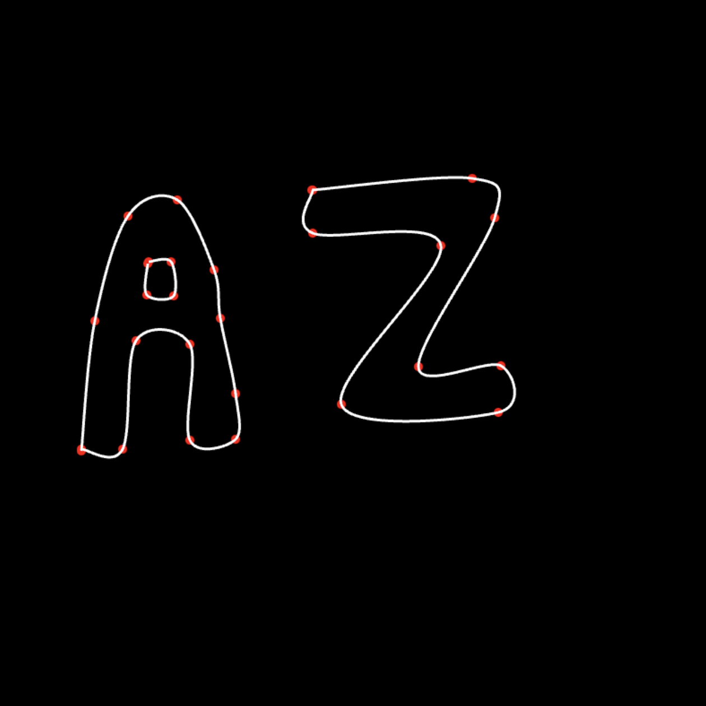
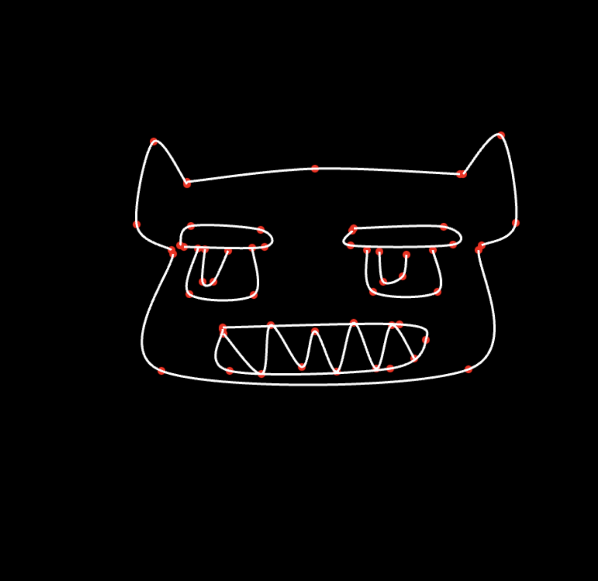

Instructions
Make a spline using keypoints: add
keypoints by clicking on canvas
Start new spline using the New
Spline button
Turn on edit mode to move the keypoints
Turn on delete mode to delete points
by clicking them
Editing Mode
Delete Mode
A small gallery below


|